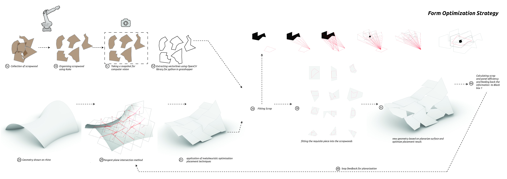

Advanced Robotic Fabrication- Robotic wood upcycling using computer vision and robotic milling.
The workflow consists of two inputs and a loop which is intended to optimize the design.
1.1 Scraps
In this project, we intend to fabricate a designed shape out of the scrap pieces of wood. This makes the wood pieces as one of the constants of the design process as they are in arbitrary random shapes and sizes. Furthermore, they are not meant to be processed to standard forms or be collected based on the design requirements. Therefore, the scrap pieces of wood are considered as one of the two inputs of the workflow.
1.2 Designed overall-shape:
The designed surface which is intended as the final shape is the second input of the loop.This surface is considered as the base input and is meant to be approximated during the process of optimization. The final shape is an approximation of this surface based on the number, sizes, and shapes of the scrap pieces. Optimizing the overall shape is not in the scope of this project. This surface is modeled as a high resolution mesh and is fed into the loop.
2.1
The loop starts by discretizing the surface into planar panels using the Tangent-Plane
Intersection(TPI) method. Initially, the shapes and sizes of the panels are generated randomly
while the number of panels is based on the number of scrap pieces. Obviously, more panels
will result in a more precise approximation of the surface. However, the precision is not the
same all over the surface.
2.2
Secondly, all of the panels are checked if they can be fitted inside the pieces of scrap woods.
Only the critical parts of the panel are considered in this process consisting of: the joining
area in the middle of each edge, and if the edge length is long enough to host the joinery.
These points can be extended in case other criteria are planned to be considered such as??.
This is also the first fitting criteria of the optimization. Lateral evaluations such as the covered
percentage of the area or waste percentage of the scrap piece are also calculated and
considered as other fitting criteria.
2.3
The resulted shape is then created and evaluated for the structural performance or maximum
deviation which are also considered as fitting criteria for the optimization.
2.4
This process of discretizing, fitting, evaluating is then looped through a multi-criteria genetic
algorithm considering all the fitting criteria, to find the panels which best fit the scrap pieces of
wood.